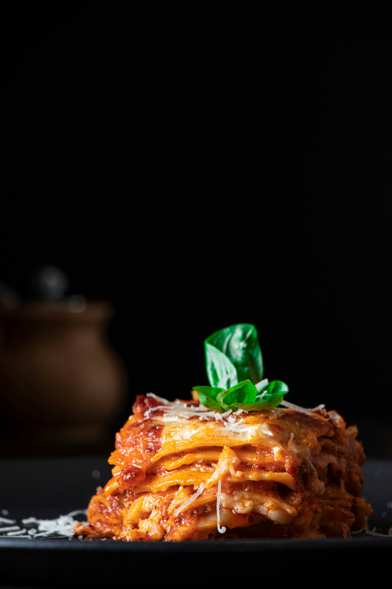

Home
Savory Cheese Lasagna

It may look like a lot to put together, but is actually very easy to pull
off. This kosher lasagna is vegetarian with lots of cheesy goodness
everyone will love.
Make it a full meal with a Caesar Salad.
Ingredients
- 30 ounces ricotta cheese
- 2 cups shredded mozzarella cheese
- 2 eggs
- 1 teaspoon garlic powder
- 1 teaspoon Italian seasoning
- 1 teaspoon parsley flakes
- ½ teaspoon salt
- ½ teaspoon black pepper
- 22 – 24 ounces pasta sauce
- ½ cup water
- 9 no boil lasagna noodles
- ¼ cup grated Parmesan cheese
Instructions
- Preheat oven to 350°F.
-
Mix ricotta cheese, 1 ½ cups of mozzarella, eggs, garlic powder, Italian
seasoning, parsley, salt, and pepper in a large bowl. Blend well.
-
Pour sauce into another bowl. Pour water into an empty jar, cover, and
shake well, then add to sauce. Mix well.
-
Spread about a little more than a cup of sauce on the bottom of
9×13-inch baking dish. Top with 3 of the lasagna noodles. Spread ½ of
the cheese mixture over noodles. Repeat sauce, noodles, and cheese layer
once. Top with remaining noodles and sauce, make sure noodles are
covered with sauce.
-
Sprinkle with remaining ½ cup of mozzarella and Parmesan. Cover with
foil.
-
Bake 45 minutes. Remove foil. Bake 15 minutes longer. Let it cool for
about 20 minutes before cutting.